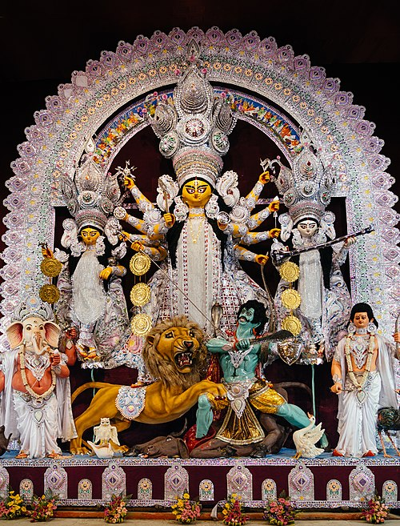

Further information: Durga and Akalabodhana 
Durga is an ancient goddess of Hinduism according to available archeological and textual evidence. However,
the origins of Durga Puja are unclear and undocumented.
The Dadhimati Mata Temple of Rajasthan preserves a Durga-related inscription from chapter 10 of Devi
Mahatmya. The temple inscription has been dated by modern methods to 608 CE.[26][27]
13th-14th century Durga statue from Ambari, Guwahati, Assam.
The name Durga, and related terms, appear in Vedic literature, such as in the Rigveda hymns 4.28, 5.34,
8.27, 8.47, 8.93 and 10.127, and in sections 10.1 and 12.4 of the Atharvaveda[28][29][E] A deity named Durgi
appears in section 10.1.7 of the Taittiriya Aranyaka.[28] While the Vedic literature uses the word Durga,
the description therein lacks legendary details about her or about Durga Puja that is found in later Hindu
literature.[31]
A key text associated with Durga Puja is Devi Mahatmya, which is recited during the festival. Durga was
A key text associated with Durga Puja is Devi Mahatmya, which is recited during the festival. Durga was
likely well established by the time this Hindu text was composed, the date of which scholars estimate as
between 400 and 600 CE.[32][33][34] The Devi Mahatmya scripture describes the nature of evil forces
symbolised by Mahishasura as shape-shifting, deceptive, and adapting in nature, in form and in strategy
to
create difficulties and thus achieve their evil ends. Durga calmly understands and counters the evil in
order to achieve her solemn goals.[17][35][F]Durga, in her various forms, appears as an independent
deity in
the Indian texts.[37]
In the Mahabharata, both Yudhisthira and Arjuna invoke hymns to Durga.[38] She appears in Harivamsa in
the
form of Vishnu's eulogy and in Pradyumna's prayer. The prominent mention of Durga in such epics may have
led
to her worship.[39][11][40]
A display of sculpture-idols depicting Rama and Narada praying with Durga
Maa Durga Rudra Roop at Gosani Jatra Puri
Some versions of the Puranas mention Durga Puja to be a spring festival, while the Devi-Bhagavata Purana
and
two other Shakta Puranas mentions it to be an autumn festival. The Ramayana manuscripts are also
inconsistent. Versions of Ramayana found in the north, west, and south of the Indian subcontinent
describe
Rama to be remembering Surya (the Hindu sun god) before his battle against Ravana, but the Bengali
manuscripts of Ramayana, such as the Krittivasi Ramayana, a 15th-century manuscript by Krittivasa,
mention
Rama to be worshipping Durga.[41] As per the legend, Rama worshipped Durga in the autumn to have her
blessings before defeating Ravana. While he was preparing for the worship of the goddess, Durga hid one
of
the 108 flowers of lotus, very essential for her worship. Having found only 107 of 108 lotuses at the
time
of the worship, Rama decided to offer one of his eyes in place of that lotus. When he was about to offer
his
eye, Durga appeared and told him that she had only hidden the flower in order to test his devotion and
she
was satisfied with it. She blessed Rama and he continued with her worship. Since the gods are believed
to be
sleeping during autumn, the awakening rite of the Durga puja is also known as akāla bodhana.[42]
Surviving manuscripts from the 14th-century provide guidelines for Durga Puja, while historical records
suggest the royalty and wealthy families to be sponsoring major Durga Puja public festivities, since at
least the 16th-century.[43] The 11th or 12th-century Jain text Yasatilaka by Somadeva mentions an annual
festival dedicated to a warrior goddess, celebrated by the king and his armed forces, and the
description
mirrors attributes of Durga Puja.[11][44]
According to some scholars, the worship of the fierce warrior goddess Durga, and her darker and more
violent
manifestation Kali, became popular in the Bengal region during and after the medieval era, marked by
Muslim
invasions and conquests.[45]
The significance of Durga and other goddesses in Hindu culture is stated to have increased after Islamic
armies conquered regions of the Indian subcontinent.[46] According to yet other scholars, the
marginalization of Bengali Hindus during the medieval era led to a reassertion of Hindu identity and an
emphasis on Durga Puja as a social festival, publicly celebrating the warrior goddess.[47] From the
medieval
era up to present-day, Durga Puja has been celebrated as a socio-cultural event, while maintaining the
roots
of religious worship.[48]
Read more
Durga is often depicted with her four children: Ganesha, Kartikeya (also known as Skanda or Murugan), Lakshmi, and Saraswati. Each of these deities has their own significance and attributes: Ganesha: The elephant-headed god of wisdom, knowledge, and new beginnings. He is widely revered as the remover of obstacles and the god of intellect and learning. Kartikeya: The god of war and victory, often depicted as a youthful warrior riding a peacock. He is considered the commander of the divine army and is associated with courage and strength. Lakshmi: The goddess of wealth, prosperity, and fortune. She is often depicted sitting or standing on a lotus flower and is associated with abundance and good luck. Saraswati: The goddess of knowledge, music, art, wisdom, and learning. She is usually depicted playing the veena (a musical instrument) and is associated with creativity and intellectual pursuits. Together, Durga and her children represent a harmonious balance of power, wisdom, prosperity, and creativity, embodying the multifaceted nature of the divine feminine in Hinduism.
Maa Durga is one of the most revered and powerful goddesses in Hinduism, symbolizing strength, courage, and protection. She is often depicted riding a lion or tiger, holding various weapons in her multiple hands, each representing the power to destroy evil and restore righteousness. Maa Durga embodies the divine feminine energy, known as Shakti, and is worshipped for her ability to remove obstacles and bring peace, prosperity, and well-being to her devotees. Celebrated especially during the festival of Durga Puja, she is honored for her victory over the buffalo demon Mahishasura, signifying the triumph of good over evil. Her presence inspires devotion, courage, and moral strength in the hearts of her followers.
Maa Durga, one of the most powerful and revered goddesses in Hindu mythology, was formed through the combined energies of all the gods to defeat the mighty demon Mahishasura. Mahishasura, a demon with the ability to change forms, had performed severe penance and received a boon from Lord Brahma that made him almost invincible: no man or god could defeat him. Empowered by this boon, he began a reign of terror over the heavens and the earth, causing fear and destruction among humans, gods, and celestial beings alike. Unable to stop him individually, the gods decided to pool their divine powers into a single, formidable entity. From this collective energy emerged Maa Durga, a goddess of unparalleled strength, beauty, and courage. She was endowed with divine weapons and powers from each god: Lord Shiva gave her the trident, Lord Vishnu provided the discus, Lord Indra contributed his thunderbolt, Lord Varuna gave a conch, and many other gods supplied their celestial weapons. These gifts made her invincible and symbolized the unity of divine forces against evil. Maa Durga also rode a ferocious lion, representing her fearless nature and mastery over power and courage. Maa Durga’s formation is not just a story of battle but a symbolic representation of the triumph of good over evil and the protective, nurturing, yet fierce nature of the divine feminine energy, known as Shakti. Her creation reminds devotees that when darkness and injustice grow overwhelming, the combined forces of righteousness, wisdom, and courage can restore balance and harmony. Today, Maa Durga’s presence is celebrated through the festival of Durga Puja, where her story of formation, valor, and victory over Mahishasura inspires millions to embrace strength, morality, and devotion in their lives.
The story of Maa Durga’s victory over Mahishasur is a powerful tale of good triumphing over evil, celebrated with great devotion during Navratri and Durga Puja. Mahishasur, the mighty demon king, performed intense penance and was granted a boon by Lord Brahma that no man or god could kill him. Filled with arrogance, he began waging war against both heaven and earth, spreading fear everywhere. Even the gods were helpless before his invincible power, for none of them could destroy him. To restore balance in the universe, the supreme energies of all the gods merged together to create a divine warrior goddess—Maa Durga. She appeared in a radiant form, mounted on a roaring lion, carrying powerful weapons given to her by different deities: Lord Shiva gave her the trident, Lord Vishnu the discus, Lord Varuna the conch, Lord Agni a spear, and many others contributed their strength. Maa Durga’s presence shone with unmatched energy, for she was the embodiment of Shakti, the divine feminine power. The battle between Maa Durga and Mahishasur raged for nine long days, symbolizing the nine forms of the goddess worshipped during Navratri. Mahishasur, gifted with the ability to change forms, kept transforming—from a buffalo to a lion, then an elephant, and even a human warrior. Yet every time, Maa Durga confronted him with unmatched valor and destroyed his illusions. On the tenth day, when Mahishasur once again took his terrifying buffalo form, Maa Durga struck him down with her trident, piercing through his chest and ending his reign of terror. This epic victory is remembered as Vijaya Dashami or Dussehra, symbolizing the triumph of righteousness over wickedness. The tale of Maa Durga defeating Mahishasur serves as a timeless reminder of courage, justice, and the supreme power of the divine feminine.
Durga Puja, Bengal’s most celebrated festival, has its origins deeply entwined with both ancient mythology and historic social transformations. The worship of Goddess Durga can be traced back to Vedic times and became especially prominent in Bengal during the medieval period. Initially, Durga Puja was a private affair restricted mostly to wealthy zamindar families, who saw it as an occasion to display opulence and foster social bonds. Notable early celebrations include the Sabarna Roy Choudhury family's puja, which began in 1610 at Barisha, and Nabakrishna Dev’s puja at Shobhabazar Rajbari in Kolkata in 1757. With the advent of British rule, new social classes emerged in Bengal—rich merchants and influential landowners used Durga Puja to affirm their status and connect with British officials and the local community. This competitive spirit pushed families to organize grand events, inviting dignitaries and showcasing luxurious idols dressed in gold and ornaments. However, as the 19th century approached, Durga Puja began to take on new significance, aligning itself with rising nationalist sentiments. The goddess was seen as an embodiment of the nation itself, and the festival became a rallying point for unity in the fight against colonial oppression. The twentieth century witnessed another key transformation: the rise of the “Barowari” or community puja, which shifted the celebration from exclusive family gatherings to public festivities where everyone could participate. The first communal Durga Puja in Kolkata was organized in 1910, marking the beginning of public celebrations that now define the festival. Today, Durga Puja in Bengal is not only a time for religious worship but also signifies social harmony, artistic vibrancy, and cultural pride, drawing people from all backgrounds to its spectacular pandals and joyous revelry